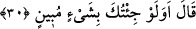
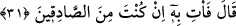

kılarım. “dedi.” Çünkü Fir’avn onları derin çukurlara atar, orada ölürlerdi. Bu yüzden:
“Seni hapishaneye atacağım” demedi.
Kâşifî der ki: “Seni mahkûmlardan biri yaparım, zindana atarım, dedi. Rivâyet
edildiğine göre Fir’avn’un zindanı ölümden beterdi. Çünkü mahkûmları derin bir
kuyuya atarlardı; orada ne bir şey görebilirler ne işitebilirlerdi. Ölmeden de dışarı
çıkarılmazlardı.”
Âyette dünya sevgisi zindanına işâret vardır. Çünkü kalb nefis ve şehvetlerinden yüz
çevirerek Allah’a ve O’nu talebe yöneldiğinde, makam ve riyâset sevgisi ağından başka
nefsin onun üzerinde bir hâkimiyeti yoktur. Çünkü makam sevgisi, sıddîkların başından
en son çıkan şeydir.
Nasıl ki Yusuf, kuyu vâsıtasıyla o yüce yolda yol almışsa
Âhiret ehli için de makam sevgisi vardır
Belki de Fir’avn, bir bölgeye hâkim olan, bahtının gücüyle orasının idaresini üzerine
alan kimsenin o bölgenin halkı tarafından ibâdet edilmeye lâyık olduğuna inanmış bir
dehrî idi. Bâzıları der ki: “Mel’un Fir’avn, teşbîh ehlindendi. Onun için “Âlemlerin
Rabbi dediğin de nedir?” (eş-Şuarâ, 26/23) yani O nedir ki hayalimizde canlandıralım
dedi.
30. Musa: “Sana apaçık bir şey getirmiş olsam da mı?” dedi.
Yâni dâvâmın doğruluğunu açıklayan bir şey, yâni mûcize getirmiş olsam da bana
bunu yapar mısın? Çünkü mûcize yaratıcının varlığına ve hikmetine delâlet ettiği gibi
peygamberlik iddiâ eden kimsenin de iddiâsında doğruluğuna şâhidlik eder. Ya da sana
apaçık bir şey getirmesem de getirmiş olsam da her durumda bana bunu yapar mısın?
Âyetteki istifhâm inkârîdir.
31. Fir’avn: “Doğru söyleyenlerden isen, haydi getir onu!” diye karşılık verdi.
“Fir’avn:” Dâvânın doğruluğunu açıkça gösteren bir delilin olduğu konusunda
“Doğru söyleyenlerden isen, haydi getir onu!” diye karşılık verdi.” Mûsâ (a.s.)’ın
elinde cennetten mersin ağacından bir asâ vardı. Âdem (a.s.) onu cennetten getirmişti.
Vefât edince Cebrail (a.s.) onu almış, risâleti vakti gelince Mûsâ (a.s.)’a verdi. Mûsâ
(a.s.), Fir’avn’a: “Benim bu elimdeki nedir?” diye sordu. Fir’avn da: “Bu bir asâdır.”